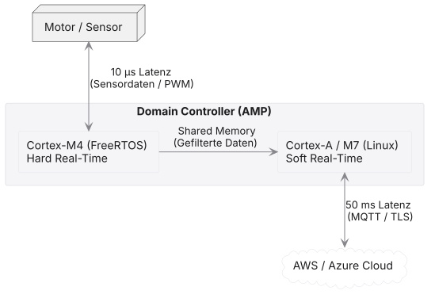
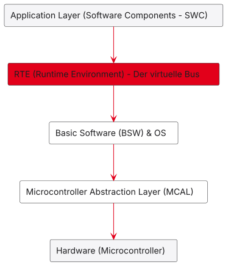
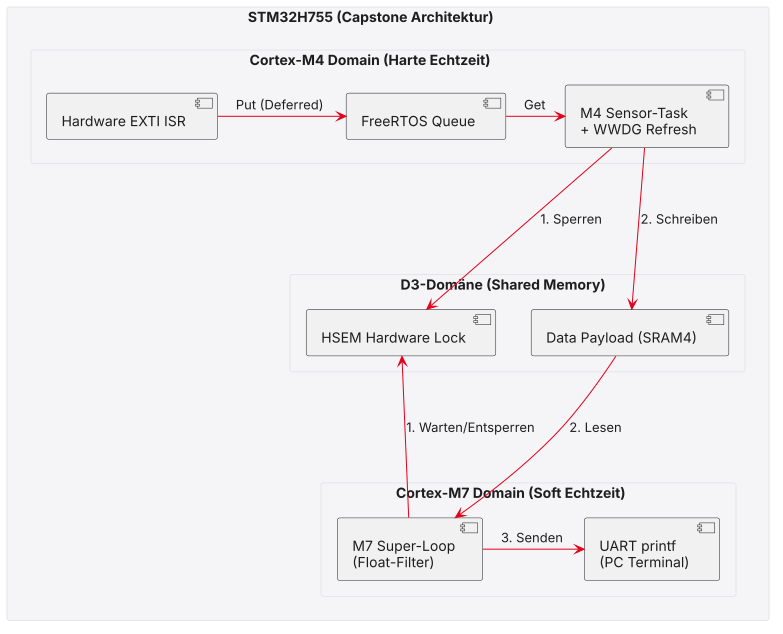

09 · Capstone-Projekt & Architekturmuster
Edge, AUTOSAR und Capstone · EZS · DHBW Stuttgart
Prof. Dr.-Ing. Daniel Klünder
Das große Finale!
- Herzlich Willkommen zum 9. und letzten Termin unserer Vorlesung.
- Hinter uns liegen 8 Wochen intensiver Theorie und Praxis.
- Heute blicken wir auf das große Ganze:
- Wie fügen sich unsere Micro-Konzepte in die Makro-Welt der Industrie ein?
- Wie baut die Automobilindustrie Software (Exkurs AUTOSAR)?
- Am Nachmittag: Das Capstone-Projekt (Die Master-Prüfung für Ihr Board).
Agenda für heute
- Semester-Rückblick: Die Reise vom C-Code zum RTOS.
- Reale Architekturmuster der Industrie (Edge, Redundanz).
- Safety-Muster (Fail-Safe vs. Fail-Operational & Lockstep).
- Exkurs: AUTOSAR (Der Automobil-Standard).
- Das Pflichtenheft für das Capstone-Labor.
Die Reise dieses Semesters
- Woche 1–2: Bare-Metal, Interrupts und das Latenz-Problem der Polling-Loop. Die Schedulability-Theorie (RMS).
- Woche 3–5: Der Wechsel zum RTOS (FreeRTOS). Task-States, Queues und das Deferred Interrupt Processing.
- Woche 6–7: Der zweite Kern erwacht. Shared Memory, Cache-Kohärenz (MPU) und Timing-Analysen mit der TASKING BlueBox.
- Woche 8: Safety. Hardware Semaphores (HSEM) gegen Race Conditions und Watchdogs (WWDG) gegen den System-Crash.
Erkenntnis 1: Determinismus schlägt Rohleistung
- In der IT-Welt (PC, Cloud) optimieren wir auf maximalen Durchsatz (Average Case).
- In der Echtzeit-Welt ist der Worst-Case das einzige, was zählt!
- Die wichtigste Formel: \(R_i \le D_i\) (Response Time \(\le\) Deadline).
- Wir opfern absichtlich CPU-Zyklen (OS-Overhead, Cache-Deaktivierung), um die Varianzen (Jitter) zu eliminieren.
Erkenntnis 2: Synchronisation ist tödlich
- Die asynchrone Präemption ist ein fantastisches Werkzeug, um Tasks nach Priorität zu ordnen.
- Aber sie zerreißt unsere Datenstrukturen!
- Die Gefahrenschwerpunkte:
- Race Conditions: Read-Modify-Write wird unterbrochen.
- Deadlocks: Zwei Tasks blockieren sich gegenseitig.
- Priority Inversion: Eine unwichtige Task sperrt den Mutex und verdrängt die wichtigste Task im System (Mars Pathfinder).
- Die Lösung liegt immer im Architektur-Design, selten im reinen C-Code.
Erkenntnis 3: Vertraue niemals der Software
- Selbst formell verifizierter Code kann durch Hardware-Einflüsse (EMI, Bit-Flips) crashen.
- Ein sicheres System verlässt sich nie nur auf die Logik.
- Wir brauchen Hardware-Fangnetze:
- MPU (Memory Protection Unit): Verhindert Stack Overflows physikalisch.
- IWDG / WWDG: Starten das System hart neu, wenn Deadlocks auftreten oder das Timing aus dem Fenster fällt.
Vom Mikrocontroller zum CPS
- Unsere Cortex-M-Platine ist heute selten ein isoliertes Gerät.
- Sie ist fast immer Teil eines Cyber-Physical Systems (CPS).
- CPS: Die tiefe Verschmelzung von physischer Mechanik (Motor, Sensor) mit Software und globalen Netzwerken (Internet of Things).
- Das führt zu extremen architektonischen Herausforderungen bezüglich Latenz und Bandbreite!
Das Edge-Computing Pattern
- „Senden wir einfach alle Sensordaten roh in die Cloud und berechnen die Regelung dort!“
- Warum das fehlschlägt:
- Latenz: Ping-Zeiten von \(50\text{ ms}\) ins Internet töten jeden PID-Regler.
- Bandbreite: \(40.000\) Samples/Sek. mal \(1000\) Sensoren verstopfen das Netz.
- Reliability: Das WLAN fällt aus \(\rightarrow\) Maschine crasht.
- Die Lösung: Edge Computing.
- Die Daten werden „an der Kante“ (Edge) – also direkt auf dem Mikrocontroller – gefiltert und aggregiert.
- Nur kompakte Metadaten („Temperatur OK“) wandern ins Netz.
Asymmetrische Lastverteilung in der Praxis
- Edge-Computing spiegelt exakt unsere AMP-Architektur aus Termin 6 wider!
- Ein realer Industrie-Roboter:

Safety-Muster: Fail-Safe vs. Fail-Operational
- Wenn ein kritischer Fehler auftritt (z. B. Watchdog Reset), wie soll das System reagieren?
- Fail-Safe (Fehlersicher):
- Das System schaltet sich sofort in einen sicheren Zustand (Motor aus, Bremsen zu).
- Beispiel: Industrieller Roboterarm, Eisenbahn-Signal, Waschmaschine.
- Fail-Operational (Fehlertolerant):
- Das System darf nicht abschalten! Es muss mit reduzierter Leistung weiterarbeiten.
- Beispiel: Autonomes Fahren auf der Autobahn (Level 4), Flugzeug-Fly-by-Wire.
- Erfordert massive Hardware-Redundanz!
Redundanz-Architekturen
- Um Fail-Operational zu erreichen, vervielfachen wir die Hardware!
- 1oo2 (One-out-of-two):
- Zwei völlig getrennte Controller berechnen dasselbe.
- Controller A ist aktiv. Controller B rechnet still mit (Hot Standby).
- Wenn A crasht, übernimmt B nahtlos.
- 2oo3 (Two-out-of-three):
- Drei unabhängige Controller (oft von verschiedenen Herstellern!).
- Ein „Voter-Chip“ vergleicht die Ergebnisse.
- Wenn CPU 1 sagt „Lenken“, aber CPU 2 und 3 sagen „Nicht lenken“, wird CPU 1 als defekt überstimmt! (Standard in der Luftfahrt).
Lockstep-Prozessoren (Hardware-Safety)
- Wie erkennt ein Controller, dass er selbst gerade einen Bit-Flip hatte?
- Die Lösung der Automobilindustrie: Lockstep-Architektur.
- Ein spezieller Chip (z. B. Infineon AURIX, TI SafeTI).
- In einem Silizium-Gehäuse stecken zwei identische Kerne.
- Beide bekommen exakt denselben Takt und exakt dieselben Befehle.
- Ihre Ausgänge werden in der Hardware Bit für Bit verglichen.
- Ist nur ein einziges Bit unterschiedlich \(\rightarrow\) Sofortiger Hardware-Halt!
Zusammenfassung Architekturmuster
- Edge-Computing verlagert harte Echtzeit aus der Cloud zurück auf den Mikrocontroller.
- Moderne Systeme trennen weiche und harte Echtzeit oft asymmetrisch (AMP).
- Fail-Safe Systeme schalten bei einem Fehler sicher ab (Watchdog Reset).
- Fail-Operational Systeme erfordern Redundanz (1oo2, 2oo3) oder Lockstep-Chips, um den Betrieb aufrechtzuerhalten.
Exkurs AUTOSAR
- AUTOSAR = AUTomotive Open System ARchitecture.
- Warum schauen wir uns das an?
- Jeder Embedded-Entwickler in Europa wird früher oder später mit diesem Begriff konfrontiert.
- Es löst Probleme, auf die wir in FreeRTOS stoßen würden, wenn unser Projekt auf 100 Entwickler anwächst!
Die Automobilkrise (Anfang der 2000er)
- Das Problem:
- Ein modernes Auto hat bis zu 100 Steuergeräte (ECUs).
- Jedes Steuergerät wurde von einem anderen Zulieferer programmiert (Bosch, Continental, Hella).
- Jeder nutzte seine eigenen Treiber, sein eigenes OS und seine eigenen Datenformate.
- Wenn BMW einen Brems-Algorithmus von Bosch auf ein Steuergerät von Continental portieren wollte \(\rightarrow\) Alles musste von Hand neu geschrieben werden!
- Der „Spaghetti-Code“ skalierte nicht mehr mit der rasanten Zunahme an Software im Auto.
Die Geburt von AUTOSAR
- 2003: BMW, Daimler, VW, Bosch, Continental (und später viele andere) schließen sich zusammen.
- Ihr gemeinsames Motto:
- „Cooperate on standards, compete on implementation.“
- (Kooperiert bei den Standards, konkurriert bei der Umsetzung).
- Das Ziel:
- Eine strikte Standardisierung der Software-Architektur.
- Hardware-Treiber (z. B. für STM32) und Applikations-Code (z. B. ABS-Algorithmus) müssen vollständig voneinander getrennt sein.
Das AUTOSAR Schichtenmodell

- Die Architektur wird in streng getrennte, waagerechte Ebenen zerschnitten.
Schicht 1: MCAL & Basic Software (BSW)
- MCAL (Microcontroller Abstraction Layer):
- Hier liegen die direkten Hardware-Treiber (z. B. SPI, ADC, PWM).
- Dieser Code ist das Einzige, was sich ändert, wenn man von Infineon zu NXP wechselt!
- Basic Software (BSW):
- Das Betriebssystem (AUTOSAR OS), CAN/Ethernet-Kommunikations-Stacks, Diagnose-Speicher, Memory-Verwaltung.
- Hochgradig standardisiert. Hunderte vordefinierte C-Schnittstellen.
Das AUTOSAR OS (im Vergleich zu FreeRTOS)
- Das AUTOSAR Betriebssystem basiert auf dem älteren OSEK/VDX Standard.
- Es gibt einen gewaltigen Unterschied zu FreeRTOS:
- Statische Konfiguration!
- In FreeRTOS können wir zur Laufzeit mit
osThreadNew()wild neue Tasks anlegen. - In AUTOSAR ist das streng verboten!
- Alle Tasks, Prioritäten, Alarme und Queues müssen vorab in XML/ARXML-Dateien definiert werden.
- Der Code-Generator baut daraus ein absolut fixes System.
- Vorteil: Mathematisch \(100\%\) nachweisbares Worst-Case-Verhalten (Keine Out-of-Memory Fehler zur Laufzeit!).
Schicht 2: Die RTE (Runtime Environment)
- Das Meisterstück von AUTOSAR.
- Die RTE ist ein virtueller Bus.
- Wenn Software-Komponente A mit B reden will, ruft sie nicht C-Funktionen auf! Sie ruft die RTE auf.
- Die RTE routet die Daten:
- Fall 1: Komponente B ist auf demselben Chip \(\rightarrow\) RTE legt Daten in RAM (wie eine Queue).
- Fall 2: Komponente B ist auf einem anderen Steuergerät im Heck des Autos \(\rightarrow\) RTE packt die Daten auf den CAN-Bus!
- Für Komponente A sieht der C-Code in beiden Fällen exakt gleich aus!
Schicht 3: Application Layer (SWC)
- Hier liegen die Software Components (SWC).
- Das ist der echte Mehrwert (z. B. der Regelalgorithmus für den Motor).
- Der Paradigmenwechsel:
- Der Programmierer dieser Schicht hat keine Ahnung, wie der Mikrocontroller heißt, wie viel MHz er hat oder wo die Register liegen.
- Der C-Code greift ausschließlich auf die abstrakten RTE-Funktionen zu.
- Dadurch wird der Code \(100\%\) wiederverwendbar und portabel über Fahrzeug-Generationen hinweg!
Ausblick: AUTOSAR Adaptive
- Die Classic Platform (C-Code, harte Echtzeit) dominiert Mikrocontroller.
- Aber: Autonomes Fahren (KI, Kameras) braucht Rechenzentren auf Rädern!
- AUTOSAR Adaptive Platform:
- Für Hochleistungs-Chips (Cortex-A Kerne, GPUs).
- Basiert nicht mehr auf OSEK, sondern auf POSIX-Betriebssystemen (Linux / QNX).
- Code wird oft in modernem C++ (Objektorientiert) geschrieben.
- Ermöglicht dynamische Updates Over-the-Air (OTA).
Warum AUTOSAR nicht immer die Lösung ist
- Wenn AUTOSAR so genial ist, warum nutzen wir im Labor FreeRTOS?
- Riesiger Tool-Overhead:
- AUTOSAR programmiert man nicht in einem einfachen Text-Editor. Man benötigt gigantische Konfigurations-Werkzeuge (z. B. von Vector oder Elektrobit).
- Lizenzen für diese Tools kosten oft zehntausende Euro pro Arbeitsplatz.
- Steile Lernkurve:
- Ein einfaches „Blink-LED“-Projekt in AUTOSAR aufzusetzen, kann für einen Anfänger Wochen dauern (hunderttausende Zeilen generierter Code).
- Fazit: Für komplexe Automotive-Netzwerke unverzichtbar. Für smarte Sensoren, IoT-Devices oder schnelle Prototypen ist FreeRTOS die deutlich agilere und bessere Wahl!
Fazit AUTOSAR
- Auch wenn Sie im Job FreeRTOS programmieren, hilft Ihnen das Wissen über AUTOSAR massiv!
- Architektur-Disziplin:
- Trennen Sie in Ihrem C-Code immer strikt die Hardware-Treiber (MCAL-Gedanke) von der Geschäftslogik (SWC-Gedanke).
- Wenn Sie nächstes Jahr von STM32 auf einen ESP32 wechseln, müssen Sie dann nur eine dünne Treiberschicht neu schreiben!
- Statische Allokation:
- Gewöhnen Sie sich an, auch in FreeRTOS Tasks und Queues statisch anzulegen (statt dynamischem Heap über
osThreadNew/malloc, z. B. mitxTaskCreateStatic), um Out-of-Memory-Abstürze zur Laufzeit zu eliminieren.
- Gewöhnen Sie sich an, auch in FreeRTOS Tasks und Queues statisch anzulegen (statt dynamischem Heap über
Das Capstone-Projekt
- Wir verlassen die Theorie und kommen zum praktischen Höhepunkt des Semesters.
- Was ist ein Capstone-Projekt? (Aus dem Englischen: Der Schlussstein eines Gewölbes).
- Ihr Ziel heute:
- Sie programmieren kein isoliertes Feature mehr.
- Sie bauen ein komplettes, asymmetrisches Multicore-System.
- Das System ist gegen Hardware- und Softwarefehler abgesichert.
- Sie beweisen das Timing am Ende mit der TASKING BlueBox.
Das Szenario: Der Smart Industrie-Sensor
- Die fiktive Kundenanforderung:
- Ein industrieller Sensor liefert zeitkritische Hardware-Impulse (Button/EXTI).
- Die Impulse müssen auf die Mikrosekunde genau erfasst werden (harte Echtzeit).
- Die Sensordaten müssen aufwändig gefiltert werden (Float-Berechnungen, softe Echtzeit).
- Das System darf bei Code-Hängern niemals für immer einfrieren (Safety).
- Das System muss am PC Log-Daten ausgeben.
- Ihre Waffe: Der Dual-Core STM32H755.
System-Architektur (Gesamtübersicht)

- M4 (FreeRTOS): Deferred Interrupt Processing → Queue → Sensor-Task mit WWDG.
- Shared Memory (SRAM4): Payload unter HSEM-Schutz.
- M7 (Bare-Metal): Float-Filter und UART-Ausgabe an den PC.
- Wichtig:
printf/UART bewusst nur auf dem Soft-Echtzeit-Kern (M7) — nicht im harten M4-Pfad (vgl. Termin 7).